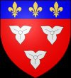

Grevinna av Anjou. Blev ca 39 år.
omkring 913 Gatinais, Orlenais-Centre, France. [1]
952 Tours, Frankrike. [1]
Biografi
europeisk aristokrati
Gerberga Gâtinais var medlem av aristokratin i Europa.
Forskningsanteckningar
Enligt profilen för Gerberge de Maine , fru till Fulk II Anjou, "besluter Maurice Chaume att greve Foulk II måste ha gift sig med Gerberge, dotter till Geoffroy, Vicomte d'Orléans [Comte de Gâtinais et Nevers]," - med tanke på sammanblandningen mellan Geoffroy d'Orléans och den mystiska Gâtinais de Fezensac, skulle detta göra denna profil Gerberga du Gâtinais till en trolig dubblett av Maine-10 . Rassinot-1 06:12, 27 oktober 2018 (UTC)
Stamtavlan för "Gerberge, grevinna d'Anjou," är högst osäker. Hon var den första frun till Foulk II den "gode", greve d'Anjou, som är känd för att ha styrt denna franska provins i Loire-Centre-regionen från 942 till 987 e.Kr. Han slöt fred med normanderna och var en lärd, diplomat och statsman. Han var med och grundade Angevin-dynastin som många av Europas kungahus härstammar från.
Foulk döpte sin förstfödde son till Geoffroy. Den franska medeltidshistorikern Maurice Chaume från början av 1900-talet beslutade att greve Foulk II måste ha gift sig med Gerberge, dotter till Geoffroy, Vicomte d'Orléans [Comte de Gâtinais et Nevers], och att de döpte sin son efter hans morfar. [2] Tyvärr förväxlar och förvirrar många av profilerna som har slagits samman på WikiTree flera olika kvinnor som heter "Gerberge" som levde under tidig medeltid. Resultatet är en hodge-podge-profil som måste undersökas noggrant av någon som är mycket väl insatt i tidig fransk historia för att hitta några kärnor av "sanning". [3]
Även om stamtavlan för Gerberge (alias Gerberga), grevinnan av Anjou från 942 till hennes död 10 år senare, förblir obevisad, den senaste forskningen, baserad på sådana forskare som Bernard Bachrach (" Fulk Nerra, den nyromerska konsulen, " 1993; " Statsbyggande i det medeltida Frankrike, "1995) och Christian Settipani (" Les Comtes d'Anjou et leurs alliances aux Xe et XIe siecles ," 1997) gynnar Maurice Chaumes val av Geoffroy, Vicomte d'Orléans [Comte de Gâtinais et Nevers] , f: 864 e.Kr., som hennes far men tillägger att hans hustru var Ava de Arverne, f: 893, i Auvergne, som var hennes mor. [4]
Om så är fallet, så föddes Gerberge inte i provinsen Maine (Sarthe-Mayenne, idag) utan i Gâtinais, en gammal fransk provins som nu är uppdelad mellan regionerna Ile de France och Loire-Centre. Dess historiska huvudstad var Pithiviers (Loiret), cirka 30 mil NO om Orleans. Om vi följer Maurice Chaume, och nya forskare, föddes Gerberge omkring 913 CE i Gâtinais, inte långt från Orleans, som hennes farfar, Vicomte Aubry d'Orleans, styrde. Familjens ursprung är oklart men härrörde troligen från en mindre gren av den karolingiska (Karl den Store) dynastin som hade styrt större delen av Europa under 800-1000-talen. Denna blodslinje, om den var känd då, skulle ha gjort henne till en mycket giftbar kvinna på sin tid.
År 937 gifte Gerberge de Gâtinais sig med Foulques II, son till Foulques I, Comte d'Anjou, en rik provins strategiskt belägen mellan Normandie, Bretagne, Aquitaine och Loire-Centre-regionerna i Frankrike. Anjou gjordes först till en provins på 800-talet när en rad svaga karolingiska franska kungar utnämnde nära adelsmän till härskare där för att bekämpa bretonerna och normanderna (vikingar) vars räder uppför Loire och Seine hotade Frankrikes livskraft. Dessa "Robertianer", som de kallades, inkluderade släktingar till prins Hughes Capet som tillskansat sig den franska kronan senare, 987 e.Kr., vilket avslutade den karolingiska dynastin. [5] [6]
När Gerberge gifte sig med Foulques II, hade hans far, en känd krigare, erhållit titeln "greve av Anjou", som han gav vidare till sin son, Foulques II (i motsats till den tidigare frankiska seden där sådana titlar inte ärvdes av en son men måste konfirmeras av ett adelsråd). Om hennes härstamning stämmer, tog hon med sig viktiga landområden till Comté d'Anjou och utan tvekan en betydande hemgift eftersom Gâtinais var en rik jordbruksregion. Hennes och Foulques II:s hov i Angers var känt för sin kultur och artighet och de ansågs i allmänhet vara kloka och rättvisa härskare, därav hans tillagda "titel" "Foulques le Bon" (Fowlkes den gode). Under de 15 åren av deras äktenskap hade Gerberge och Foulques II d'Anjou 4 barn som överlevde till mognad: [7]
GEOFFROY d'Anjou, född ca. 938/40; död: 21 juli 987 CE; ärvdes som Comte d'Anjou 958 e.Kr. Kallas Grisegonelle: "Greymantle".
GUY (Guido) d'Anjou, f: efter 940; dog 994; gick in i prästerskapet, utnämnd till biskop av Le Puy, 975 e.Kr
ADELAIS (Blanche) d'Anjou, f: ca. 947 CE; d: 29 maj 1026 - Drottning av Frankrike, skild; sedan drottning av Aquitaine; hade 4 män
DREUX (Drogo) d'Anjou, f: ca. 951/52; död 998 e.Kr.; gick in i prästerskapet; efterträdde sin bror som biskop av Le Puy, 995 till 998 e.Kr.
Hennes barns ädla öden vittnar om den strategiska betydelsen av Anjou och de politiska förmågorna hos dess härskare under den turbulenta tidiga medeltiden. Tyvärr överlevde Gerberge inte länge födelsen av sin 3:e son, Drogo (latin = Dreux på franska). Hon noterades som döende år 952 e.Kr., och lämnade därmed sin ännu unge make som änkeman. Han gifte snart om sig med Roscille de Blois, syster till Comte de Blois, ett närliggande territorium, och nyligen änka efter Alain Barbetorte, Duc de Bretagne. Detta gav Foulques II kontroll över det mycket större länet i Bretagne, eftersom den döde hertigens son bara var ett barn. Han tog en underordnad titel: Comte de Nantes, direkt som sin egen. År 958 var dock den "goda" Comte Foulques II död, under misstänkta omständigheter, och hans son Geoffroy d'Anjou ärvde sin Angevin-tron.